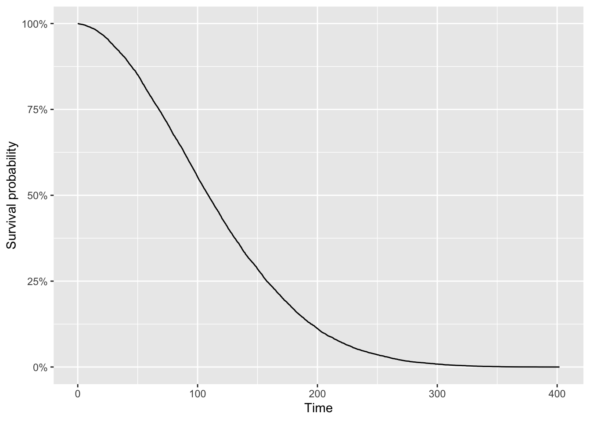
5 TEMA 5: ANÁLISIS DE SUPERVIVENCIA
Cuando hayamos terminado este tema, seremos capaces de:
- Comprender los conceptos básicos del análisis de supervivencia.
- Aprender a utilizar R para realizar análisis de supervivencia.
- Interpretar los resultados de los análisis de supervivencia.
- Aplicar técnicas de análisis de supervivencia en estudios médicos.
- Familiarizarse con la visualización de datos de supervivencia utilizando gráficos de Kaplan-Meier.
- Entender la importancia del análisis de supervivencia en la investigación médica y epidemiológica.5.1 Introducción
Para la última publicación del año, me gustaría presentar un método estadístico bastante desconocido (aunque importante): el análisis de supervivencia. Aunque el análisis de supervivencia es una rama de la estadística, no suele abordarse en los cursos de introducción a la estadística y es bastante desconocido para el público general. Se enseña principalmente en cursos de bioestadística o en programas de estudio de estadística avanzada.
En la práctica, el análisis de supervivencia casi siempre se realiza con un programa estadístico y nunca a mano. Sin embargo, como con cualquier concepto estadístico, la computación al menos una vez a mano permite entender realmente los conceptos y lo que estos programas hacen en realidad. Por esta razón, se mostrará un breve ejemplo de cómo realizar un análisis de supervivencia básico a mano.
5.1.1 ¿Qué es el análisis de supervivencia?
El análisis de supervivencia (también llamado análisis de tiempo hasta el evento o análisis de duración) es una rama de la estadística que tiene como objetivo analizar la duración del tiempo desde un origen temporal bien definido hasta que ocurren uno o más eventos, llamados tiempos de supervivencia o tiempos de duración. En otras palabras, en el análisis de supervivencia, nos interesa un evento determinado y queremos analizar el tiempo hasta que ese evento ocurre.
Si bien el evento de interés suele ser la muerte (en este caso, estudiamos el tiempo hasta la muerte para pacientes con una enfermedad específica) o la recurrencia (en este caso, estudiamos el tiempo hasta la recaída de una enfermedad determinada), no se limita al campo de la medicina o la epidemiología. De hecho, se puede utilizar en muchos ámbitos. El evento de interés no tiene por qué ser la muerte o la aparición de una enfermedad, pero en todas las situaciones estamos interesados en analizar el tiempo hasta que ocurre un evento específico.
Los datos de supervivencia, también conocidos como datos de tiempo hasta el evento, requieren un conjunto especial de métodos estadísticos por tres razones principales:
- Los tiempos de duración son siempre positivos: el tiempo hasta que ocurre un evento de interés no puede ser menor que 0. Además, la distribución de los tiempos de supervivencia tiene un sesgo a la derecha.
- Se utilizan diferentes medidas de interés dependiendo de la pregunta de investigación, el contexto, etc. Por ejemplo, podríamos estar interesados en: La probabilidad de que un paciente con cáncer sobreviva más de 5 años después del diagnóstico o el tiempo de espera hasta la próxima recidiva de cáncer.
- La censura definida como la falta de observación del evento de interés para algunos individuos durante el período de estudio. Cuando el evento ocurrió antes del final del estudio, el tiempo de supervivencia se conoce, sin embargo, a veces, el evento aún no se ha observado al final del estudio. Supongamos que estudiamos el tiempo hasta la muerte de pacientes con cáncer de mama. Afortunadamente, algunas pacientes no morirán antes de que finalice el estudio. Pero también puede ocurrir que el paciente se pierda durante el seguimiento (por ejemplo, porque se muda a otra ciudad o país) o que el paciente decida abandonar el estudio. En estos casos, no conocemos su tiempo exacto de supervivencia, pero sabemos que sobrevivieron al menos hasta el final del estudio o hasta el momento en que se perdieron o abandonaron el estudio. En todas estas situaciones, su tiempo de supervivencia no puede observarse porque el evento no se observa durante la duración del estudio.
La censura hace que se requieren métodos estadísticos específicos para tener en cuenta el hecho de que la duración exacta de la supervivencia de algunos pacientes falta. Se sabe que sobrevivieron una cierta cantidad de tiempo (hasta el final del estudio o hasta el momento del abandono), pero se desconoce su tiempo exacto de supervivencia.
Para tu información, existen tres tipos de censura:
- Censura a la derecha (la más frecuente),
- Censura a la izquierda (la menos frecuente) y
- Censura por intervalo.
Cuando el evento aún no se ha observado al final del estudio (es decir, el tiempo de supervivencia es mayor que la duración observada), esto se conoce como censura a la derecha. La censura a la izquierda ocurre si un participante entra en el estudio cuando el evento de interés ya ha ocurrido antes de su entrada, pero no sabemos exactamente cuándo. La censura por intervalo implica que el evento ocurrió dentro de un intervalo de tiempo (entre dos fechas conocidas, dos visitas, etc.); no se conoce el momento exacto de la ocurrencia. El objetivo es, por supuesto, analizar todos los datos disponibles, incluida la información sobre los pacientes censurados.
El objetivo del análisis de supervivencia es, por tanto, modelar y describir los datos de tiempo hasta el evento de una manera apropiada, teniendo en cuenta las particularidades de este tipo de datos.
5.2 Funciones comunes en el análisis de supervivencia
No vamos a entrar en demasiados detalles, pero es importante sentar las bases con las funciones más comunes en el análisis de supervivencia.
Sea \(T\) una variable aleatoria continua no negativa, que representa el tiempo hasta el evento de interés. Consideramos las siguientes funciones:
- Función de supervivencia
- Función de riesgo acumulado
- Función de riesgo
5.2.1 Función de supervivencia (survival function)
La más común es la función de supervivencia.
Sea \(T\) una variable aleatoria continua no negativa, que representa el tiempo hasta el evento de interés. La función de supervivencia \(S(t)\) es la probabilidad de que un individuo elegido al azar siga en riesgo en el tiempo \(t\), donde \(0 \le t \le +\infty\). Para cada \(t\), viene dada por
\[ \begin{align*} S(t) &= P(T > t)\\ &= 1 - P(T \le t)\\ &= 1 - F(t)\\ &= 1 - \int^t_0 f(u)\text{d}u, \end{align*} \]
donde \(f(\cdot)\) y \(F(\cdot)\) son las funciones de densidad y de distribución acumulada de \(T\), respectivamente.
\(S(t)\) representa, para cada tiempo \(t\), la probabilidad de que el tiempo hasta el evento sea mayor que este tiempo \(t\). En otras palabras, modela la probabilidad de que el evento de interés ocurra después de \(t\). En el contexto de la Bioestadística, la probabilidad de que un paciente seleccionado al azar sobreviva más allá del tiempo \(t\) o la proporción de pacientes que siguen vivos después del tiempo \(t\),
La función de supervivencia \(S(t)\) es:
- una función decreciente,
- que toma valores en \([0, 1]\) (ya que es una probabilidad), y
- es igual a 1 en \(t = 0\) (es decir, \(S(0) = 1\)) y 0 en \(t = \infty\) (es decir, \(S(\infty) = 0\)).
Visualmente tenemos:
La curva muestra la proporción de individuos (o unidades experimentales) que, a medida que pasa el tiempo, no han experimentado el evento de interés. Con el paso del tiempo, ocurren eventos, por lo que la proporción de quienes no han experimentado el evento disminuye.
5.2.2 Función de riesgo acumulado (cummlative hazard function)
La función de riesgo acumulado, que es el riesgo total experimentado hasta el tiempo \(t\), se define como:
\[H(t) = -\log\left(S(t)\right)\]
y tiene las siguientes propiedades:
- función creciente,
- toma valores en \([0, +\infty]\), y
- \(S(t) = \exp(-H(t))\).
5.2.3 Función de riesgo (Hazard function)
La función de riesgo \(h(t)\), o tasa de riesgo, define la tasa instantánea de eventos en el tiempo \(t\) para un individuo que todavía está en riesgo en ese momento. Se puede obtener mediante
\[ \begin{align*} h(t) &= \lim_{\Delta t \rightarrow 0} \frac{P(t \le T < t + \Delta t | T \ge t)}{\Delta t}\\ &= \frac{d}{dt} H(t)\\ &= \frac{f(t)}{S(t)}. \end{align*} \] y tiene las siguientes propiedades:
- función positiva (no necesariamente creciente o decreciente)
- la función de riesgo \(h(t)\) puede tener muchas formas diferentes y, por lo tanto, es una herramienta útil para resumir datos de supervivencia.
En el contexto de la investigación del cáncer, cuando la muerte es el evento de interés, \(h(t)\) mide el riesgo instantáneo de morir justo después del tiempo \(t\), dado que el individuo está vivo en el tiempo \(t\).
Para vincular la tasa de riesgo con la función de supervivencia, la curva de supervivencia representa las tasas de riesgo. Una pendiente más pronunciada indica una tasa de riesgo más alta porque los eventos ocurren con más frecuencia, reduciendo la proporción de individuos que no han experimentado el evento a un ritmo más rápido. Por el contrario, una pendiente gradual y más plana indica una tasa de riesgo más baja porque los eventos ocurren con menos frecuencia, reduciendo la proporción de individuos que no han experimentado el evento a un ritmo más lento. Más formalmente:
\[S(t) = \exp\left(-\int^t_0 h(u) \text{d}u\right).\] Ten en cuenta que, a diferencia de la función de supervivencia que se centra en no tener un evento, la función de riesgo se centra en que el evento ocurra.
5.3 Estimación estadística de la función de supervivencia: el estimador de Kaplan-Meier
Para estimar la función de supervivencia, necesitamos usar un estimador que sea capaz de manejar la censura. El más común es el estimador no paramétrico de Kaplan-Meier, también conocido a veces como el estimador de producto-límite, o más simplemente, el estimador K-M [1].
Las ventajas del estimador de Kaplan-Meier son que:
- es simple y directo de usar e interpretar.
- es un estimador no paramétrico, por lo que construye una curva de supervivencia a partir de los datos y no se hacen suposiciones sobre la forma de la distribución subyacente.
- proporciona una representación gráfica de la(s) función(es) de supervivencia, útil para fines ilustrativos.
El principio detrás de este estimador es que sobrevivir más allá del tiempo \(t_i\) implica sobrevivir más allá del tiempo \(t_{i-1}\) y sobrevivir en el tiempo \(t_i\). Ten en cuenta que una suposición importante para que la estimación sea válida es que la censura es independiente de la ocurrencia de eventos. Decimos que la censura no es informativa, es decir, los sujetos censurados tienen las mismas perspectivas de supervivencia que los sujetos que no están censurados y que continúan siendo seguidos.
Para entender cómo funciona, primero vamos a estimarlo a mano con el siguiente conjunto de datos. Ten en cuenta que en el análisis de supervivencia, la precisión de los estimadores y la potencia de las pruebas no depende del número de pacientes, sino del número de eventos. Por lo tanto, es mejor tener muchas observaciones en las que el evento ocurra para que los análisis sean efectivos. Aquí tenemos 10 sujetos con sus tiempos de supervivencia (en años) y su estado de evento (0 = censurado, 1 = evento ocurrido):
| subject | time | event |
|---|---|---|
| 1 | 3 | 0 |
| 2 | 5 | 1 |
| 3 | 7 | 1 |
| 4 | 2 | 1 |
| 5 | 18 | 0 |
| 6 | 16 | 1 |
| 7 | 2 | 1 |
| 8 | 9 | 1 |
| 9 | 16 | 1 |
| 10 | 5 | 0 |
donde: - subject es el identificador del individuo - time es el tiempo hasta el evento (en años). Ten en cuenta que la variable time puede expresarse en otras unidades, como segundos, días, semanas, meses, etc. - event es el estado del evento (0 = censurado, 1 = evento ocurrido)
Recuerda que para cada sujeto, necesitamos conocer al menos 2 datos:
- el tiempo hasta el evento de interés o el tiempo hasta la censura, y
- si hemos observado el evento de interés o si hemos observado censura.
Primero necesitamos contar el número de tiempos de evento distintos. Ignorando las observaciones censuradas, tenemos 5 tiempos de evento distintos:
2, 5, 7, 9, 16
La forma más fácil de hacer el cálculo a mano es rellenando la siguiente tabla (una tabla con 5 filas ya que hay 5 tiempos de evento distintos):
| \(j\) | \(y_{(j)}\) | \(d_{(j)}\) | \(R_{(j)}\) | \(1 - \frac{d_{(j)}}{R_{(j)}}\) |
|---|---|---|---|---|
| 1 | ||||
| 2 | ||||
| 3 | ||||
| 4 | ||||
| 5 |
Rellenamos las columnas una por una:
- \(y_{(j)}\) = los tiempos de evento distintos y ordenados:
2, 5, 7, 9, 16
Así que la tabla queda:
| \(j\) | \(y_{(j)}\) | \(d_{(j)}\) | \(R_{(j)}\) | \(1 - \frac{d_{(j)}}{R_{(j)}}\) |
|---|---|---|---|---|
| 1 | 2 | |||
| 2 | 5 | |||
| 3 | 7 | |||
| 4 | 9 | |||
| 5 | 16 |
- \(d_{(j)}\) = el número de observaciones para cada tiempo de evento distinto. Para esto, la frecuencia de cada tiempo de evento distinto es útil y la tabla queda:
| \(j\) | \(y_{(j)}\) | \(d_{(j)}\) | \(R_{(j)}\) | \(1 - \frac{d_{(j)}}{R_{(j)}}\) |
|---|---|---|---|---|
| 1 | 2 | 2 | ||
| 2 | 5 | 1 | ||
| 3 | 7 | 1 | ||
| 4 | 9 | 1 | ||
| 5 | 16 | 2 |
- \(R\_{(j)}\) = el número restante de individuos en riesgo. Para esto, la distribución del tiempo (censurado y no censurado) es útil. Vemos que:
- Al principio hay 10 sujetos
- Justo antes del tiempo \(t = 5\), quedan 7 sujetos (10 sujetos - 2 que tuvieron el evento - 1 que está censurado)
- Justo antes del tiempo \(t = 7\), quedan 5 sujetos (= 10 - 2 - 1 - 2)
- Justo antes del tiempo \(t = 9\), quedan 4 sujetos (= 10 - 2 - 1 - 2 - 1)
- Justo antes del tiempo \(t = 16\), quedan 3 sujetos (= 10 - 2 - 1 - 2 - 1 - 1)
La tabla queda:
| \(j\) | \(y_{(j)}\) | \(d_{(j)}\) | \(R_{(j)}\) | \(1 - \frac{d_{(j)}}{R_{(j)}}\) |
|---|---|---|---|---|
| 1 | 2 | 2 | 10 | |
| 2 | 5 | 1 | 7 | |
| 3 | 7 | 1 | 5 | |
| 4 | 9 | 1 | 4 | |
| 5 | 16 | 2 | 3 |
- \(1 - \frac{d_{(j)}}{R_{(j)}}\) es de cálculo sencillo, así que la tabla queda:
| \(j\) | \(y_{(j)}\) | \(d_{(j)}\) | \(R_{(j)}\) | \(1 - \frac{d_{(j)}}{R_{(j)}}\) |
|---|---|---|---|---|
| 1 | 2 | 2 | 10 | 0.800 |
| 2 | 5 | 1 | 7 | 0.857 |
| 3 | 7 | 1 | 5 | 0.800 |
| 4 | 9 | 1 | 4 | 0.750 |
| 5 | 16 | 2 | 3 | 0.333 |
El estimador de Kaplan-Meier es: \[\hat{S}_{KM}(t) = \prod_{j:y_{(j)} \le t} \left(1 - \frac{d_{(j)}}{R_{(j)}} \right)\] que es el producto acumulado de los términos en la última columna para todos los tiempos de evento distintos \(y_{(j)}\) menores o iguales a \(t\). Para cada \(j\), tomamos el producto acumulado:
- \(j_1 = 0.8\)
- \(j_2 = 0.8 \cdot 0.857 = 0.6856\)
- \(j_3 = 0.6856 \cdot 0.8 = 0.54848\)
- \(j_4 = 0.54848 \cdot 0.75 = 0.41136\)
- \(j_5 = 0.41136 \cdot 0.333 = 0.1369829\)
Así que finalmente, tenemos las probabilidades de supervivencia (redondeadas a 3 decimales):
| \(j\) | \(1 - \frac{d_{(j)}}{R_{(j)}}\) | \(\hat{S}_{KM}(t)\) |
|---|---|---|
| 1 | 0.800 | 0.800 |
| 2 | 0.857 | 0.686 |
| 3 | 0.800 | 0.548 |
| 4 | 0.750 | 0.411 |
| 5 | 0.333 | 0.137 |
Ahora podemos representar gráficamente el estimador de Kaplan-Meier con las funciones survfit() y Surv():
Observa que la función Surv() acepta dos argumentos: 1. la variable time, y 2. la variable event.
El ~ 1 en la función survfit() indica que estimamos el Kaplan-Meier sin ninguna agrupación. Finalmente, mostramos los resultados y dibujamos el gráfico de Kaplan-Meier en R:
# KM
library(survival)
km <- survfit(Surv(time, event) ~ 1,
data = dat)
# resultados
summary(km)Call: survfit(formula = Surv(time, event) ~ 1, data = dat)
time n.risk n.event survival std.err lower 95% CI upper 95% CI
2 10 2 0.800 0.126 0.5868 1.000
5 7 1 0.686 0.151 0.4447 1.000
7 5 1 0.549 0.172 0.2963 1.000
9 4 1 0.411 0.176 0.1782 0.950
16 3 2 0.137 0.126 0.0225 0.834# gráfico
plot(km,
xlab = "Tiempo",
ylab = "Probabilidad de supervivencia",
conf.int = FALSE)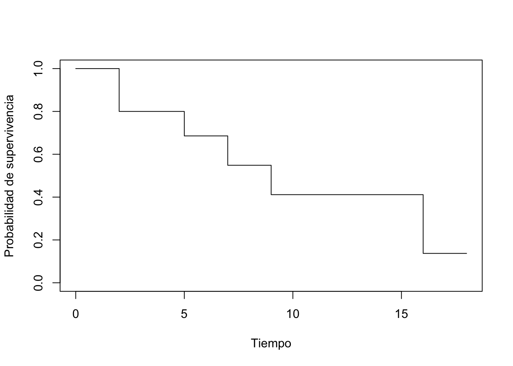
Las probabilidades de supervivencia se pueden encontrar en la columna survival. Observa que los resultados a mano y en R son similares (cualquier diferencia con los resultados a mano se debe al redondeo).
Alternativamente, podemos usar la función ggsurvplot() del paquete {survminer}:
#install.packages("survminer")
library(survminer)
# gráfico
ggsurvplot(km,
conf.int = FALSE,
legend = "none")
Nota: las cruces en la curva de supervivencia denotan las observaciones censuradas.
La ventaja de la función ggsurvplot() es que es fácil dibujar la mediana de supervivencia directamente en el gráfico. Se prefiere la mediana a la media en el análisis de supervivencia porque las funciones de supervivencia a menudo están sesgadas a la derecha. La media suele estar influenciada por valores atípicos, mientras que la mediana no.
# gráfico con mediana
ggsurvplot(km,
conf.int = FALSE,
surv.median.line = "hv",
legend = "none")
Ten en cuenta que si la curva de supervivencia no cruza el 50% es porque la supervivencia es mayor al 50% en el último punto temporal, entonces la mediana de supervivencia no se puede calcular y simplemente está indefinida.
summary(km)$table["median"]median
9 # o más simple
kmCall: survfit(formula = Surv(time, event) ~ 1, data = dat)
n events median 0.95LCL 0.95UCL
[1,] 10 7 9 5 NASupongamos que el evento de interés es la muerte:
- En el tiempo cero, la probabilidad de supervivencia es 1 (el 100% de los sujetos están vivos).
- La mediana indica que el tiempo mediano de supervivencia es de 9 años. Ten en cuenta que la mediana de supervivencia se expresa en la misma unidad que la variable
timeen el conjunto de datos inicial. Así, si la unidad de tiempo fueran meses, el tiempo mediano de supervivencia sería de 9 meses. Este es el tiempo en el que la supervivencia \(S(t)\) es del 50%. En otras palabras, es el tiempo después del cual se espera que la mitad de los sujetos hayan muerto. - Del gráfico, también vemos que \(S(5) = P(T > 5 \text{ años}) =\) Probabilidad de supervivencia de más de 5 años para estos sujetos = 75%. Esto significa que el 75% de todos los sujetos sobreviven más de 5 años, y que el 25% de todos los sujetos mueren en los primeros 5 años.
Para ser exhaustivos, hagamos otro ejemplo con un conjunto de datos mucho más grande; el conjunto de datos tongue del paquete {KMsurv}.Puedes encontrar más información sobre el conjunto de datos en CRAN o con ?tongue.
# cargar datos
library(KMsurv)
data(tongue)
# previsualizar datos
head(tongue) type time delta
1 1 1 1
2 1 3 1
3 1 3 1
4 1 4 1
5 1 10 1
6 1 13 1typees el perfil de ADN del tumor (1 = tumor aneuploide, 2 = tumor diploide)timees el tiempo hasta la muerte o el tiempo en estudio (en semanas)deltaes el indicador de muerte (0 = vivo, 1 = muerto)
Para este ejemplo, nos centramos en el tipo aneuploide:
aneuploid <- subset(tongue, type == 1)Ahora podemos graficar la función de supervivencia estimada y estimar el tiempo mediano hasta la muerte. Dado que es un estimador, también podemos construir un intervalo de confianza para la supervivencia estimada en cada tiempo \(t\) y para el tiempo mediano de supervivencia estimado.
library(survival)
# resultados
fit <- survfit(Surv(time, delta) ~ 1,
data = aneuploid,
conf.type = "log-log")
fitCall: survfit(formula = Surv(time, delta) ~ 1, data = aneuploid, conf.type = "log-log")
n events median 0.95LCL 0.95UCL
[1,] 52 31 93 65 157# gráfico
ggsurvplot(fit,
surv.median.line = "hv",
legend = "none")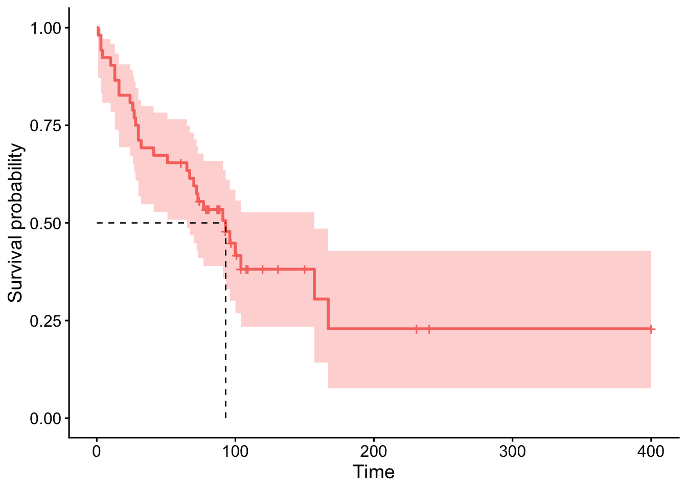
El tiempo mediano de supervivencia se estima en 93 semanas, con un intervalo de confianza del 95% entre 65 y 157 semanas.
Las curvas de Kaplan-Meier pueden verse como estadísticas descriptivas para datos de supervivencia. Ahora nos centramos en la segunda rama de la estadística, la prueba de hipótesis, que permite sacar conclusiones sobre la población basándose en una muestra.
5.4 Prueba de hipótesis: Log-rank test
La prueba de hipótesis en el campo del análisis de supervivencia se ocupa principalmente de:
- La función de riesgo de una población: en este caso, probamos si una muestra censurada proviene de una población con una función de riesgo conocida \(h_0(t)\). Por ejemplo, podríamos estar interesados en comparar la supervivencia en una muestra de pacientes con la supervivencia en la población general (derivada de las tablas de vida).
- La comparación de la función de riesgo de dos o más poblaciones: en este caso, nos interesa evaluar si existen diferencias en la supervivencia entre diferentes grupos de sujetos. Por ejemplo nos interesa comparar la supervivencia de pacientes con cáncer de colon hombres y mujeres o más grupos (la supervivencia de pacientes con cáncer de melanoma según sus tratamientos con tratamientos A, B y C, por ejemplo).
El test Log-rank (también conocido como prueba de Mantel-Cox) es la prueba de hipótesis más común para comparar la supervivencia entre dos grupos [2]. La intuición detrás de la prueba es que si los dos grupos tienen tasas de riesgo diferentes, las dos curvas de supervivencia (y por lo tanto sus pendientes) diferirán. Más precisamente, la prueba de log-rank compara el número observado de eventos en cada grupo con lo que se esperaría si las curvas de supervivencia fueran idénticas (es decir, si la hipótesis nula fuera cierta). Ten en cuenta que, al igual que el estimador de Kaplan-Meier, la prueba de log-rank es una prueba no paramétrica, que no hace suposiciones sobre las distribuciones de supervivencia.
Para este ejemplo, considera el siguiente conjunto de datos:
patient group time event
1 1 1 4.1 1
2 2 1 7.8 0
3 3 1 10.0 1
4 4 1 10.0 1
5 5 1 12.3 0
6 6 1 17.2 1
7 7 2 9.7 1
8 8 2 10.0 1
9 9 2 11.1 0
10 10 2 13.1 0
11 11 2 19.7 1
12 12 2 24.1 0donde: - patient es el identificador del paciente - group es el grupo (grupo 1 o 2) - time es el tiempo hasta la muerte (en años) - event es el estado del evento (0 = censurado, 1 = muerte) Supongamos que estamos interesados en comparar el grupo 1 y 2 en términos de supervivencia, es decir, comparamos las curvas de supervivencia entre los 2 grupos:
- \(H_0 : S_1(t) = S_2(t)\) para todo \(t\)
- \(H_1 : S_1(t) \ne S_2(t)\) para algún \(t\)
Es una prueba estadística, por lo que si el valor \(p\) < \(\alpha\) (generalmente 0.05), rechazamos la hipótesis nula y concluimos que la supervivencia (o el tiempo hasta el evento) es significativamente diferente entre los dos grupos considerados.
Para realizar la prueba de log-rank, el siguiente estadístico de prueba será útil:
\[ \begin{eqnarray} U &=& \sum_{j=1}^r w(y_{(j)})\left(O_j - E_j\right) \\ &=& \sum_{j=1}^r w(y_{(j)})\left( d_{(j)1} - \frac{d_{(j)}R_{(j)1}}{R_{(j)}}\right) \end{eqnarray} \]
con \(U^{obs} = \frac{U}{\sqrt{Var(U)}} \sim N(0,1)\) y este es el caso para muestras grandes. El ejemplo descrito aquí no cumple esta condición, pero aun así lo mostramos como ilustración.
\[ \begin{eqnarray} Var(U) &=& \sum_{j=1}^r w^2(y_{(j)}) \frac{N_{(j)}}{ D_{(j)} }\\ &=& \sum_{j=1}^r w^2(y_{(j)}) \frac{ d_{(j)} \frac{R_{(j)1}}{R_{(j)} } \left( 1 - \frac{R_{(j)1}}{R_{(j)} } \right) \left( R_{(j)} - d_{(j)}\right) }{ R_{(j)} - 1 } \end{eqnarray} \] Al igual que con el estimador de Kaplan-Meier a mano, es mejor rellenar una tabla para la prueba de log-rank a mano.
Presentemos la tabla final y comentemos a continuación cómo rellenarla, columna por columna:
| \(j\) | \(y_{(j)}\) | \(d_{(j)1}\) | \(R_{(j)1}\) | \(d_{(j)2}\) | \(R_{(j)2}\) | \(d_{(j)}\) | \(R_{(j)}\) | \(E_{j}\) | \(O_{j}\) | \(O_{j} - E_{j}\) | \(N_{(j)}\) | \(D_{(j)}\) | \(N_{(j)}/D_{(j)}\) |
|---|---|---|---|---|---|---|---|---|---|---|---|---|---|
| 1 | 4.1 | 1 | 6 | 0 | 6 | 1 | 12 | 0.5 | 1 | 0.5 | 2.75 | 11 | 0.25 |
| 2 | 9.7 | 0 | 4 | 1 | 6 | 1 | 10 | 0.4 | 0 | -0.4 | 2.16 | 9 | 0.24 |
| 3 | 10 | 2 | 4 | 1 | 5 | 3 | 9 | 1.333 | 2 | 0.667 | 4.44 | 8 | 0.555 |
| 4 | 17.2 | 1 | 1 | 0 | 2 | 1 | 3 | 0.333 | 1 | 0.667 | 0.44 | 2 | 0.22 |
| 5 | 19.7 | 0 | 0 | 1 | 2 | 1 | 2 | 0 | 0 | 0 | 0.00 | 1 | 0.00 |
| \(Total\) | 4 | 3 | 7 | 2.566 | 1.433 | 1.265 |
Columna \(j\) es el número de tiempos de evento distintos. Vemos que hay 5 (ignorando las observaciones censuradas), así que escribimos del 1 al 5 en la tabla. Columna \(y_{(j)}\) son los tiempos de evento distintos y ordenados: 4.1, 9.7, 10, 17.2, 19.7 Columna \(d_{(j)1}\) es el número de observaciones para cada tiempo de evento distinto, para el grupo 1. Cuando no hay ningún evento, simplemente escribimos 0 en la tabla. Columna \(R_{(j)1}\) es el número restante de pacientes en riesgo, para el grupo 1. Para esto, la distribución del tiempo (censurado y no censurado, para el grupo 1) es útil. Vemos que: - Al principio, hay 6 pacientes. - Antes del tiempo 9.7, quedan 4 pacientes (6 - 1 que tuvo el evento en el tiempo 4.1 - 1 que fue censurado en el tiempo 7.8). - Antes del tiempo 10, quedan 4 pacientes (6 - 2). - Antes del tiempo 17.2, queda 1 paciente (6 - 5). - Antes del tiempo 19.7, quedan 0 pacientes (6 - 6). Las columnas \(d_{(j)2}\) y \(R_{(j)2}\) siguen el mismo principio, pero esta vez para el grupo 2. Las columnas \(d_{(j)}\) y \(R_{(j)}\) también siguen el mismo principio, pero esta vez considerando ambos grupos. La columna \(E_{j}\) es el número esperado de eventos en el primer grupo asumiendo que \(h_1 \equiv h_2\). Se obtiene de la siguiente manera:
\[ E_{j} = \frac{d_{(j)}R_{(j)1}}{R_{(j)}}\]
La columna \(O_{j}\) es el número observado de eventos en el primer grupo, por lo que es igual a la columna \(d_{(j)1}\). La columna \(O_{j} - E_{j}\) es sencilla. La columna \(N_{(j)}\) se define de la siguiente manera:
\[N_{(j)} = d_{(j)} \frac{R_{(j)1}}{R_{(j)} } \left( 1 - \frac{R_{(j)1}}{R_{(j)} } \right) \left( R_{(j)} - d_{(j)}\right)\]
La columna \(D_{(j)}\) es \(R_{(j)} - 1\). La columna \(N_{(j)}/D_{(j)}\) es sencilla.
Dado que \(w(y_{(j)}) = w^2(y_{(j)}) = 1\) para una prueba de log-rank, tenemos
\[ U^{obs} = \frac{U}{\sqrt{Var(U)}} = \frac{1.434}{\sqrt{1.265}} = 1.275.\]
Rechazamos \(H_0\) si \(|U^{obs}|>z_{1-\alpha/2}\), así que a un nivel de significancia del 5% rechazamos \(H_0\) si \(|U^{obs}|>z_{0.975}=1.96\).
Tenemos \(|U^{obs}| = 1.275 < z_{0.975}=1.96\). Por lo tanto, a un nivel de significancia del 5% no rechazamos \(H_0\). Esto significa que, basándonos en los datos, no podemos concluir que la supervivencia sea diferente entre los dos grupos (lo que es equivalente a decir que no rechazamos la hipótesis de que la supervivencia es igual entre los dos grupos).
Si te interesa calcular el valor \(p\):
valor \(p\) \(= 2\times P(Z>1.275) = 2 \times 0.101 = 0.202 > 0.05\).
En R ahora comparamos nuestros resultados con la función survdiff():
dat <- data.frame(
group = c(rep(1, 6), rep(2, 6)),
time = c(4.1, 7.8, 10, 10, 12.3, 17.2, 9.7, 10, 11.1, 13.1, 19.7, 24.1),
event = c(1, 0, 1, 1, 0, 1, 1, 1, 0, 0, 1, 0)
)
dat group time event
1 1 4.1 1
2 1 7.8 0
3 1 10.0 1
4 1 10.0 1
5 1 12.3 0
6 1 17.2 1
7 2 9.7 1
8 2 10.0 1
9 2 11.1 0
10 2 13.1 0
11 2 19.7 1
12 2 24.1 0survdiff(Surv(time, event) ~ group,
data = dat)Call:
survdiff(formula = Surv(time, event) ~ group, data = dat)
N Observed Expected (O-E)^2/E (O-E)^2/V
group=1 6 4 2.57 0.800 1.62
group=2 6 3 4.43 0.463 1.62
Chisq= 1.6 on 1 degrees of freedom, p= 0.2 Alternativamente, podemos usar la función ggsurvplot() para dibujar las curvas de supervivencia y realizar la prueba de log-rank al mismo tiempo:
fit <- survfit(Surv(time, event) ~ group, data = dat)
ggsurvplot(fit,
pval = TRUE,
pval.method = TRUE)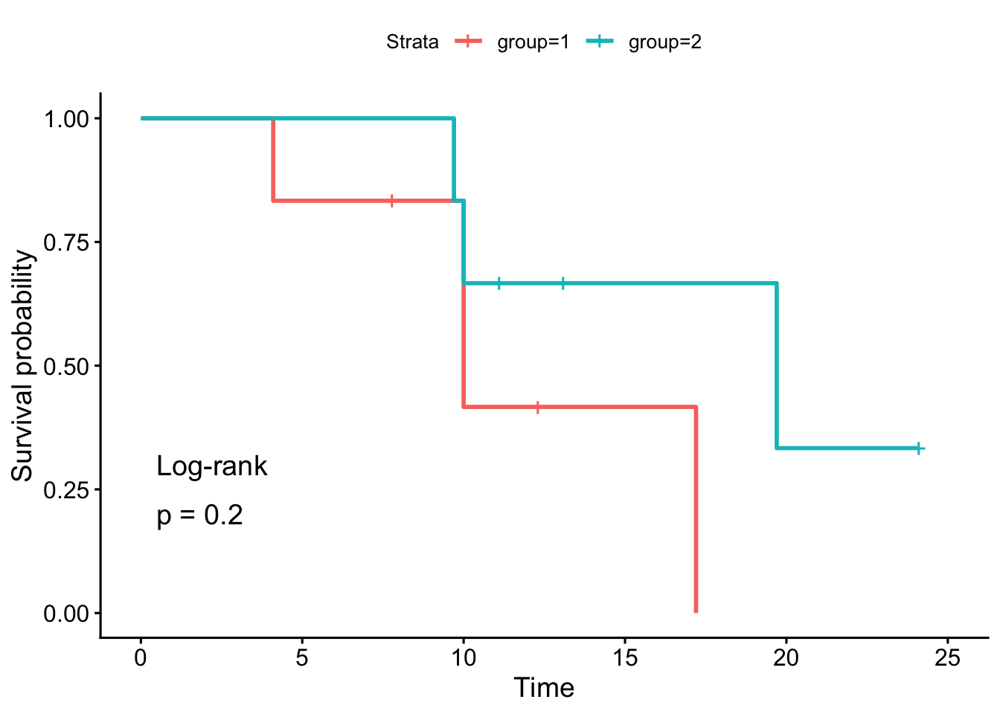
Como podemos ver, los valores \(p\) y las conclusiones son las mismas (cualquier diferencia con los resultados a mano se debe al redondeo). Al igual que con la estimación de Kaplan-Meier, hacemos otro ejemplo con un conjunto de datos más grande. Considera los datos sobre los tiempos hasta la infección por estafilococo en pacientes con quemaduras, también disponibles en {KMsurv}. Puedes encontrar más información sobre el conjunto de datos en CRAN o con ?burn.]
# cargar datos
data(burn)
# previsualizar datos
head(burn) Obs Z1 Z2 Z3 Z4 Z5 Z6 Z7 Z8 Z9 Z10 Z11 T1 D1 T2 D2 T3 D3
1 1 0 0 0 15 0 0 1 1 0 0 2 12 0 12 0 12 0
2 2 0 0 1 20 0 0 1 0 0 0 4 9 0 9 0 9 0
3 3 0 0 1 15 0 0 0 1 1 0 2 13 0 13 0 7 1
4 4 0 0 0 20 1 0 1 0 0 0 2 11 1 29 0 29 0
5 5 0 0 1 70 1 1 1 1 0 0 2 28 1 31 0 4 1
6 6 0 0 1 20 1 0 1 0 0 0 4 11 0 11 0 8 1Usando la prueba de log-rank, queremos probar la hipótesis de diferencia en el tiempo hasta la infección por estafilococo (variable T3) entre pacientes cuyas quemaduras fueron tratadas con un método de baño rutinario (Z1 = 0) frente a aquellos cuya limpieza corporal se realizó inicialmente con gluconato de clorhexidina al 4% (Z1 = 1). El indicador de evento está en la variable D3.
Para esta prueba, usamos una alternativa de dos colas y un nivel de significancia del 5%.
# ajuste
fit <- survfit(Surv(T3, D3) ~ Z1, data = burn)
# gráfico con prueba de log-rank
ggsurvplot(fit,
pval = TRUE,
pval.method = TRUE)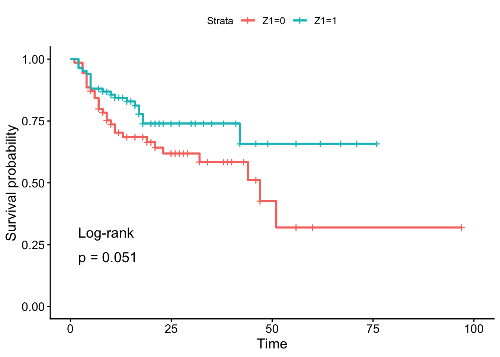
En la muestra, parece que el tiempo hasta la infección para los pacientes con baño rutinario (Z1 = 0) es menor que para los pacientes con limpieza corporal (Z1 = 1). Esto es así porque el porcentaje de pacientes que no han experimentado la infección disminuye más rápidamente, por lo que la tasa de riesgo es mayor. Sin embargo, esta conclusión no puede generalizarse a la población sin realizar una prueba estadística sólida. Y basándonos en el resultado de la prueba de log-rank, no rechazamos la hipótesis de que el tiempo hasta la infección es el mismo entre los dos grupos de pacientes (valor \(p\) = 0.051).
5.5 Estimación estadística de la función de riesgo acumulado: el estimador de Aalen Nelson
Otra función importante en el análisis de supervivencia es la función de riesgo acumulado \(H(t)\), que se define como: \[H(t) = \int_0^t h(u) du.\] El estimador de Aalen-Nelson es un estimador no paramétrico de la función de riesgo acumulado \(H(t)\), definido como: \[\hat{H}(t) = \sum_{j:y_{(j)} \le t} \frac{d_{(j)}}{R_{(j)}},\] donde \(d_{(j)}\) es el número de eventos en el tiempo \(y_{(j)}\) y \(R_{(j)}\) es el número de individuos en riesgo justo antes del tiempo \(y_{(j)}\). El estimador de Aalen-Nelson se interpreta como la suma acumulativa de las tasas de eventos observadas en cada tiempo de evento distinto hasta el tiempo \(t\). Es una función escalonada que aumenta en cada tiempo de evento distinto. El estimador de Aalen-Nelson se puede calcular fácilmente en R utilizando la función survfit() del paquete {survival}. Aquí hay un ejemplo utilizando el conjunto de datos tongue del paquete {KMsurv}:
# cargar datos
library(KMsurv)
data(tongue)
# previsualizar datos
head(tongue) type time delta
1 1 1 1
2 1 3 1
3 1 3 1
4 1 4 1
5 1 10 1
6 1 13 1# ajustar el modelo de supervivencia
fit <- survfit(Surv(time, delta) ~ 1, data = tongue)
# calcular el estimador de Aalen-Nelson
aalen_nelson <- cumsum(fit$n.event / fit$n.risk)
# gráfico del estimador de Aalen-Nelson
plot(fit$time, aalen_nelson,
type = "s",
xlab = "Tiempo",
ylab = "Función de riesgo acumulado",
main = "Estimador de Aalen-Nelson")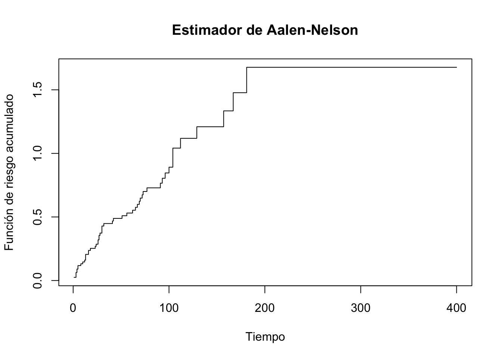
Como puedes ver, el estimador de Aalen-Nelson proporciona una estimación de la función de riesgo acumulado a lo largo del tiempo. La función de riesgo acumulado es útil para comprender la probabilidad acumulada de que ocurra un evento a lo largo del tiempo y puede ser utilizada en conjunto con otras funciones de supervivencia para obtener una visión más completa del proceso de supervivencia.
5.6 Modelado de datos de supervivencia: el modelo de riesgos proporcionales de Cox
Como habrás notado, no mostramos cómo modelar datos de supervivencia. Existen varios modelos de regresión que se pueden aplicar a los datos de supervivencia, siendo el más común el semiparamétrico o Modelo de riesgos proporcionales de Cox. Este modelo asume que la función de riesgo de un individuo es el producto de una función de riesgo base (que depende del tiempo pero no de las covariables) y un término que depende de las covariables pero no del tiempo. La suposición clave es que las razones de riesgos entre dos individuos son constantes a lo largo del tiempo (de ahí el término “proporcionales”). Este modelo es muy flexible y ampliamente utilizado en análisis de supervivencia.[3]
La Regresión de Cox es un método esencial en la Medicina para analizar el tiempo de supervivencia hasta que ocurre un evento de interés (como la muerte, la recurrencia de una enfermedad, o el alta hospitalaria). Permite evaluar el efecto de múltiples variables (covariables) sobre el riesgo (o hazard) de que ocurra el evento.
Con el modelo de Cox, modelamos el impacto de diferentes factores \(X_1, X_2, \ldots, X_q\) en la supervivencia a través de su impacto en la función de riesgo:
\[h(t|\textbf{X}) = h_0 (t) \exp(\beta_1 X_1 + \beta_2 X_2 + \cdots + \beta_q X_q),\] donde:
- \(h(t|\textbf{X})\) es la tasa instantánea de muerte (o riesgo instantáneo) condicionada a haber sobrevivido hasta el tiempo \(t\).
- \(h_0 (t)\) es el riesgo basal a nivel poblacional, es decir, la función de riesgo subyacente. Describe cómo evoluciona el riesgo de una persona promedio a lo largo del tiempo.
- \(\exp(\beta_1 X_1 + \beta_2 X_2 + \cdots + \beta_q X_q)\) describe cómo las covariables afectan al riesgo. En particular, un aumento de una unidad en \(x_i\) multiplica el riesgo por un factor de \(\exp(\beta_i)\).
5.6.1 Ejemplo modelo de Cox en oncología médica
El modelo de Cox se puede ajustar fácilmente en R utilizando la función coxph() del paquete {survival}. A continuación, te presento un ejemplo contextualizado en oncología médica. Este ejemplo simula el análisis del tiempo hasta la recurrencia del cáncer en pacientes, evaluando el efecto de la Edad y el Estadio del tumor al momento del diagnóstico. El contexto Médico es el siguiente:
Objetivo: Determinar qué factores (Edad y Estadio del tumor) influyen en el tiempo que transcurre hasta la recurrencia del cáncer de mama en una cohorte de pacientes.
Variables:
-Tiempo (en meses): Tiempo de seguimiento hasta la recurrencia o la censura. -Evento (0/1): 1 si ocurrió la recurrencia, 0 si fue censurado (p.ej., el paciente se perdió en el seguimiento o el estudio terminó). -Edad (años): Edad de la paciente al diagnóstico (variable continua). -Estadio (I, II, III): Estadio del tumor al diagnóstico (variable categórica).
El análisis de supervivencia mediante la Regresión de Cox se emplea para modelar el tiempo transcurrido hasta un evento, permitiendo la inclusión de covariables. En este estudio, examinaremos la influencia de la edad y el estadio del tumor sobre el tiempo hasta la recurrencia del cáncer.
Cargamos los paquetes necesarios y preparamos datos de ejemplo (utilizaremos un conjunto de datos simulado o uno disponible en un paquete para la demostración).
Visualizamos la supervivencia por grupos para entender las diferencias crudas antes del ajuste de Cox.
# Crear el objeto de supervivencia
surv_object <- Surv(time = datos$Tiempo, event = datos$Evento)
# Ajuste de Kaplan-Meier por Estadio
fit_km <- survfit(surv_object ~ Estadio, data = datos)
# Gráfico
ggsurvplot(
fit_km,
data = datos,
pval = TRUE,
risk.table = TRUE,
legend.title = "Estadio",
title = "Curva de Supervivencia de Kaplan-Meier por Estadio del Tumor",
xlab = "Tiempo de Seguimiento (meses)",
ylab = "Probabilidad de Supervivencia"
)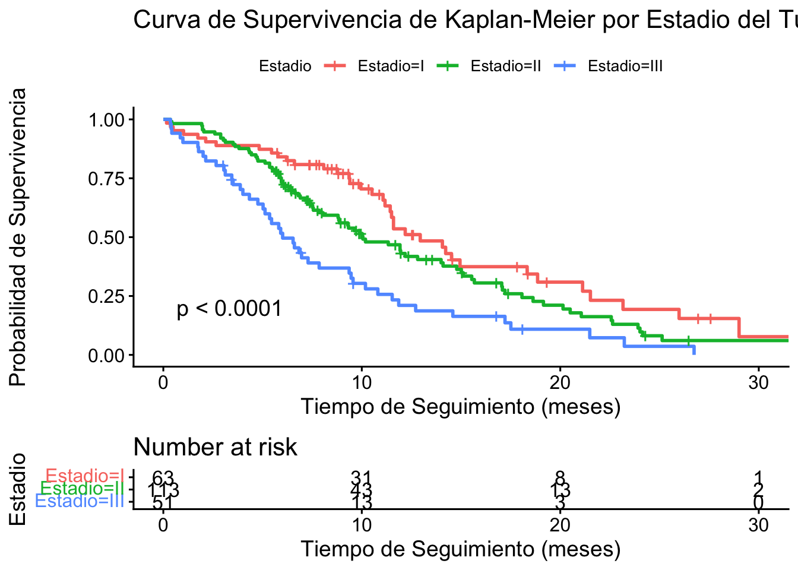
Ajustamos el modelo de Cox para estimar los Hazard Ratios (HR) ajustando por la Edad y el Estadio.
# Ajustar el modelo de Cox
modelo_cox <- coxph(surv_object ~ Edad + Estadio, data = datos)
# Resumen del modelo
summary(modelo_cox)Call:
coxph(formula = surv_object ~ Edad + Estadio, data = datos)
n= 227, number of events= 164
coef exp(coef) se(coef) z Pr(>|z|)
Edad 0.01101 1.01107 0.00938 1.173 0.240653
EstadioII 0.35786 1.43027 0.19884 1.800 0.071904 .
EstadioIII 0.86995 2.38680 0.22933 3.794 0.000149 ***
---
Signif. codes: 0 '***' 0.001 '**' 0.01 '*' 0.05 '.' 0.1 ' ' 1
exp(coef) exp(-coef) lower .95 upper .95
Edad 1.011 0.9891 0.9926 1.030
EstadioII 1.430 0.6992 0.9686 2.112
EstadioIII 2.387 0.4190 1.5227 3.741
Concordance= 0.61 (se = 0.025 )
Likelihood ratio test= 18.73 on 3 df, p=3e-04
Wald test = 19.52 on 3 df, p=2e-04
Score (logrank) test = 20.37 on 3 df, p=1e-045.6.2 Gráfico de Incidencia Acumulada
El gráfico de incidencia acumulada es simplemente el complemento de la función de supervivencia: \(1 - S(t)\). Representa la probabilidad acumulada de que el evento (recurrencia) haya ocurrido en el tiempo \(t\).
# Crear una función para la Incidencia Acumulada: 1 - S(t)
# Esto invierte las curvas del gráfico anterior.
ggsurvplot(
fit_km,
data = datos,
fun = "event", # La función "event" grafica la Incidencia Acumulada (1-S(t))
conf.int = TRUE,
pval = FALSE,
risk.table = TRUE,
legend.title = "Estadio",
title = "Incidencia Acumulada de Recurrencia Ajustada por Modelo de Cox",
xlab = "Tiempo de Seguimiento (meses)",
ylab = "Probabilidad de Recurrencia Acumulada (F(t))",
ylim = c(0, 1) # Asegurar el eje y de 0 a 1
)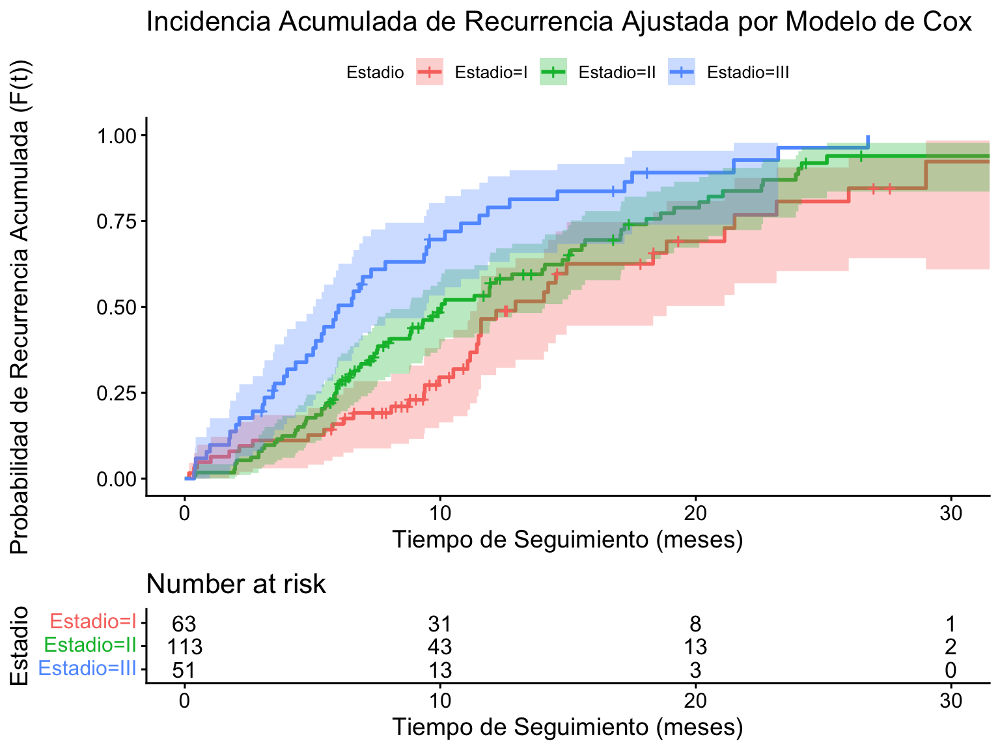
5.6.3 Interpretación de Resultados
El resumen del modelo muestra los coeficientes (\(\beta\)), los Errores Estándar (se(coef)), el estadístico de Wald, el valor p y el Hazard Ratio (\(e^{\beta}\)) o HR con sus intervalos de confianza.
# Extraer coeficientes y HRs de forma limpia
resultados_cox <- as.data.frame(summary(modelo_cox)$coefficients)
resultados_cox$HR <- exp(resultados_cox$`coef`)
resultados_cox$`IC 95% Inferior` <- exp(resultados_cox$`coef` - 1.96 * resultados_cox$`se(coef)`)
resultados_cox$`IC 95% Superior` <- exp(resultados_cox$`coef` + 1.96 * resultados_cox$`se(coef)`)
knitr::kable(
resultados_cox %>% select(`HR`, `z`, `Pr(>|z|)`, `IC 95% Inferior`, `IC 95% Superior`),
caption = "Resultados de la Regresión de Cox (Riesgos Proporcionales)",
digits = 3
)| HR | z | Pr(>|z|) | IC 95% Inferior | IC 95% Superior | |
|---|---|---|---|---|---|
| Edad | 1.011 | 1.173 | 0.241 | 0.993 | 1.030 |
| EstadioII | 1.430 | 1.800 | 0.072 | 0.969 | 2.112 |
| EstadioIII | 2.387 | 3.794 | 0.000 | 1.523 | 3.741 |
5.6.4 Conclusiones
- Edad: Por cada aumento de un año en la edad del paciente, el riesgo de recurrencia (HR) es de aproximadamente \(HR_{Edad}\). Un valor de \(HR_{Edad} > 1\) (y con \(p < 0.05\)) indica que ser mayor aumenta el riesgo.
- Estadio (Categorías):
- Estadio II vs. I (Referencia): El riesgo de recurrencia en pacientes con Estadio II es \(HR_{Estadio II}\) veces el riesgo de los pacientes con Estadio I, manteniendo la edad constante.
- Estadio III vs. I (Referencia): El riesgo de recurrencia en pacientes con Estadio III es \(HR_{Estadio III}\) veces el riesgo de los pacientes con Estadio I, manteniendo la edad constante.
La interpretación de los Hazard Ratios (\(HR\)) es la clave:
- \(HR > 1\): La covariable aumenta el riesgo de recurrencia.
- \(HR < 1\): La covariable disminuye el riesgo de recurrencia.
- \(HR = 1\): La covariable no tiene efecto sobre el riesgo.
5.6.5 Verificación del Supuesto de Riesgos Proporcionales (RP)
El modelo de Cox asume que el Hazard Ratio es constante a lo largo del tiempo. Esto se verifica con el test de los residuos de Schoenfeld.
# Test del supuesto de RP
test_rp <- cox.zph(modelo_cox)
print(test_rp) chisq df p
Edad 0.319 1 0.57
Estadio 2.249 2 0.32
GLOBAL 2.302 3 0.51# Gráfico de los residuos de Schoenfeld
ggcoxzph(test_rp, caption = "Gráfico de Residuos de Schoenfeld para el Test de Riesgos Proporcionales")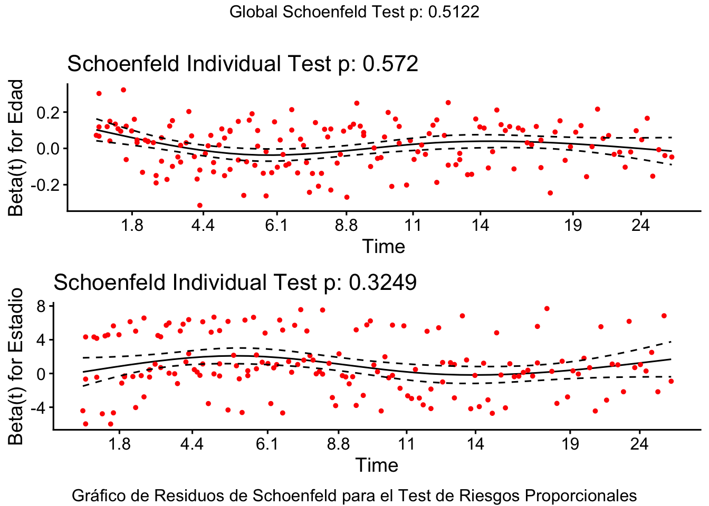
Si el p-valor global (\(p > 0.05\)) en el test de los residuos de Schoenfeld, se asume que se cumple el supuesto de Riesgos Proporcionales. Los residuos deben mostrar una línea horizontal sin tendencias claras.
5.6.6 Narrativo para publicación científica:
En un análisis de supervivencia utilizando el modelo de riesgos proporcionales de Cox, se evaluó el impacto de la edad y el estadio del tumor en el tiempo hasta la recurrencia del cáncer de mama en una cohorte de pacientes.
Los resultados indicaron que por cada aumento de un año en la edad, el riesgo de recurrencia aumentó en un factor de 1.011 (HR; IC 95%: [0.993, 1.030], p = 0.241). Además, los pacientes con Estadio II presentaron un riesgo de recurrencia 1.430 veces mayor (HR; IC 95%: [0.969, 2.112], p = 0.072) en comparación con aquellos en Estadio I, si bien este efecto NO fue significativo. De manera similar, los pacientes en Estadio III mostraron un riesgo estadísticamente significativamente elevado de recurrencia, con un HR de 2.387 (IC 95%: [1.523, 3.741], p = <0.001) en comparación con los pacientes en Estadio I.
El gráfico de incidencia acumulada confirmó que la probabilidad acumulada de recurrencia era considerablemente mayor y se alcanzaba más rápidamente en pacientes con estadios más avanzados (Estadio III), en comparación con los estadios I y II. El supuesto de riesgos proporcionales fue verificado y no se encontró evidencia de violación (p-global = 0.512). Estos hallazgos sugieren que tanto la edad como el estadio del tumor son factores críticos que influyen en la probabilidad de recurrencia del cáncer de mama.
5.6.7 Ejemplo extendido:
Ampliamos el ejemplo de Regresión de Cox para incluir una variable categórica adicional, un término de interacción y, crucialmente, el gráfico de incidencia acumulada (o función de supervivencia, que es su complemento).
El nuevo ejemplo contextualizado en oncología incluirá:
- Variable Categórica: Terapia Recibida (Quimioterapia vs. Radioterapia).
- Interacción: Edad * Estadio (para ver si el efecto de la edad en el riesgo de recurrencia depende del estadio del tumor).
En este ejemplo se modela el tiempo hasta la recurrencia del cáncer, evaluando el efecto de la Edad, el Estadio del tumor, la Terapia Recibida, y la interacción entre Edad y Estadio.
Variables Adicionales:
-Terapia (Quimio/Radio): Tipo de tratamiento primario (variable categórica/nominal).
-Interacción Edad:Estadio: Evalúa si el efecto de la edad en el riesgo de recurrencia difiere en los Estadios II y III comparados con el Estadio I.
Cargamos los paquetes y preparamos los datos, añadiendo la variable Terapia para la demostración.
Ajustamos el modelo de Cox incluyendo la variable categórica Terapia y el término de interacción Edad:Estadio. El término Edad * Estadio es una forma abreviada en R para incluir los efectos principales (Edad + Estadio) y el término de interacción (Edad:Estadio).
# Objeto de supervivencia
surv_object <- Surv(time = datos_ext$Tiempo, event = datos_ext$Evento)
# Ajustar el modelo de Cox con interacción y la nueva variable categórica
modelo_cox_int <- coxph(surv_object ~ Edad * Estadio + Terapia, data = datos_ext)
# Resumen del modelo
summary(modelo_cox_int)Call:
coxph(formula = surv_object ~ Edad * Estadio + Terapia, data = datos_ext)
n= 227, number of events= 164
coef exp(coef) se(coef) z Pr(>|z|)
Edad 0.05309 1.05453 0.02233 2.377 0.01744 *
EstadioII 3.78339 43.96466 1.62346 2.330 0.01978 *
EstadioIII 3.86698 47.79776 1.97229 1.961 0.04992 *
TerapiaQuimioterapia 0.52566 1.69157 0.17473 3.008 0.00263 **
Edad:EstadioII -0.05374 0.94768 0.02532 -2.122 0.03383 *
Edad:EstadioIII -0.04665 0.95442 0.03028 -1.541 0.12336
---
Signif. codes: 0 '***' 0.001 '**' 0.01 '*' 0.05 '.' 0.1 ' ' 1
exp(coef) exp(-coef) lower .95 upper .95
Edad 1.0545 0.94829 1.0094 1.1017
EstadioII 43.9647 0.02275 1.8248 1059.2372
EstadioIII 47.7978 0.02092 1.0014 2281.5031
TerapiaQuimioterapia 1.6916 0.59117 1.2010 2.3824
Edad:EstadioII 0.9477 1.05520 0.9018 0.9959
Edad:EstadioIII 0.9544 1.04775 0.8994 1.0128
Concordance= 0.654 (se = 0.025 )
Likelihood ratio test= 34.78 on 6 df, p=5e-06
Wald test = 31.44 on 6 df, p=2e-05
Score (logrank) test = 33.35 on 6 df, p=9e-06El modelo incluye 7 coeficientes (log-HRs):
- Efectos Principales:
Edad,EstadioII,EstadioIII,TerapiaQuimioterapia. - Interacciones:
Edad:EstadioII,Edad:EstadioIII.
| Coeficiente | Interpretación \(\mathbf{e^{\beta}}\) |
|---|---|
| Edad | HR de la edad para pacientes con Estadio I y Radioterapia (grupo de referencia). |
| EstadioII | HR de un paciente con Estadio II frente a uno con Estadio I, cuando la Edad = 0 (aunque esto no es clínicamente interpretable, establece la línea base). |
| TerapiaQuimioterapia | HR de recibir Quimioterapia frente a Radioterapia, para un paciente con Estadio I y Edad = 0. |
| Edad:EstadioII | El cambio en el log-HR de la Edad por cada año adicional, si el paciente es Estadio II frente a Estadio I. |
Un p-valor bajo para el término de interacción (Edad:EstadioII o Edad:EstadioIII) sugiere que el efecto de la Edad sobre el riesgo de recurrencia es significativamente diferente según el estadio.
Podemos usar el modelo de Cox para predecir la curva de supervivencia (Probabilidad de Supervivencia) para diferentes perfiles de pacientes.
5.6.7.1 Curvas de Supervivencia Ajustadas (Edad promedio)
Predeciremos las curvas de supervivencia (probabilidad de no recurrencia) para cada estadio, manteniendo la edad en su promedio y asumiendo una terapia específica.
# 1. Definir los nuevos datos para la predicción
media_edad <- mean(datos_ext$Edad)
nuevos_datos <- with(datos_ext,
data.frame(
Estadio = factor(levels(Estadio), levels = levels(Estadio)),
Edad = rep(media_edad, 3),
Terapia = factor("Quimioterapia", levels = levels(Terapia)) # Fijamos Terapia en Quimioterapia
))
# 2. Calcular las curvas de supervivencia ajustadas
fit_cox_ajustado <- survfit(modelo_cox_int, newdata = nuevos_datos)
# 3. Graficar
ggsurvplot(
fit_cox_ajustado,
data = nuevos_datos,
conf.int = TRUE,
pval = FALSE,
risk.table = TRUE,
legend.title = "Estadio",
title = "Probabilidad de Supervivencia Ajustada",
xlab = "Tiempo de Seguimiento (meses)",
ylab = "Probabilidad de Supervivencia (S(t))"
)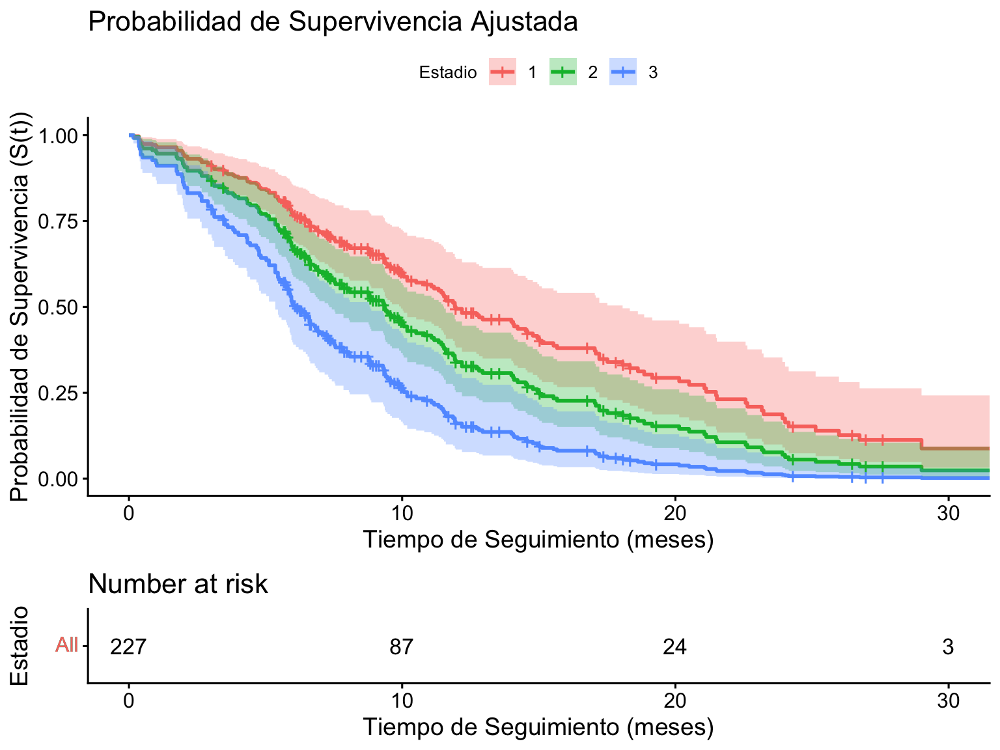
5.6.7.2 Gráfico de Incidencia Acumulada Ajustada
El gráfico de incidencia acumulada es simplemente el complemento de la función de supervivencia: \(1 - S(t)\). Representa la probabilidad acumulada de que el evento (recurrencia) haya ocurrido en el tiempo \(t\).
# Crear una función para la Incidencia Acumulada: 1 - S(t)
# Esto invierte las curvas del gráfico anterior.
ggsurvplot(
fit_cox_ajustado,
data = nuevos_datos,
fun = "event", # La función "event" grafica la Incidencia Acumulada (1-S(t))
conf.int = TRUE,
pval = FALSE,
risk.table = TRUE,
legend.title = "Estadio (Edad promedio)",
title = "Incidencia Acumulada Ajustada",
xlab = "Tiempo de Seguimiento (meses)",
ylab = "Probabilidad de Recurrencia Acumulada (F(t))",
ylim = c(0, 1) # Asegurar el eje y de 0 a 1
)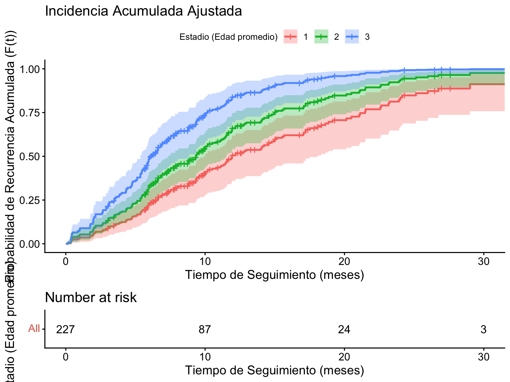
Referencias
1.
Kaplan EL, Meier P. Nonparametric estimation from incomplete observations. Journal of the American statistical association. 1958;53(282):457–81.
2.
Mantel N. Evaluation of survival data and two new rank order statistics arising in its consideration. Cancer Chemotherapy Reports. 1966;50(3):163–70.
3.
Cox DR. Regression models and life-tables. Journal of the Royal Statistical Society: Series B (Methodological). 1972;34(2):187–202.